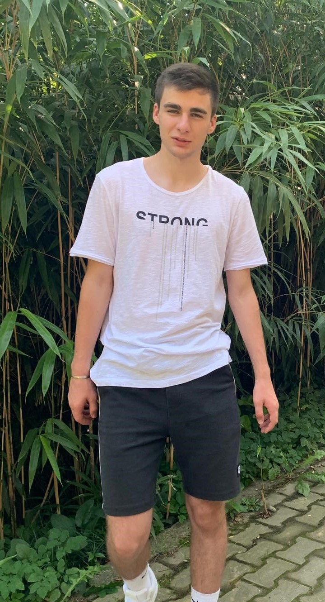

GeorgianEntrepreneur
About
Blog
Tazo Skhirtladze - (The most successful trader in georgia ?)
April 16, 2023
126 comments



Tazo Skhirtladze, the youngest millionaire in Georgia, dominates social networks and has a great influence on them. Tazo graduated from Oxford University. At the age of 21, he already had 15 million dollars in his bank account. The main question is did he make millions by trading or was there room for fraud?
Date of birth: 09/03/2002
Height: 6 ft 9 in
Weight: 97 kg
Net worth: $17 Million
Sexuality: Bisexual
Here are the links of his social networks